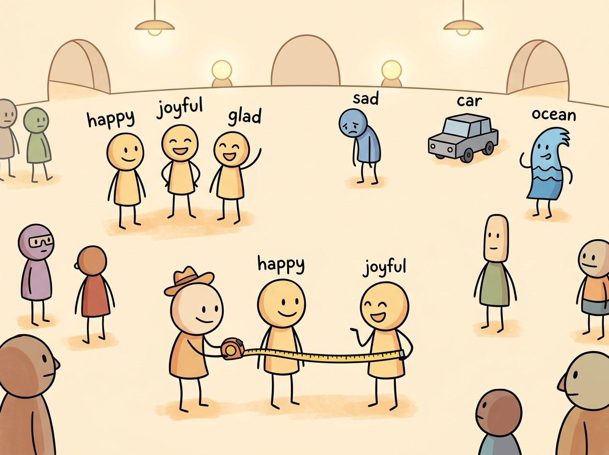
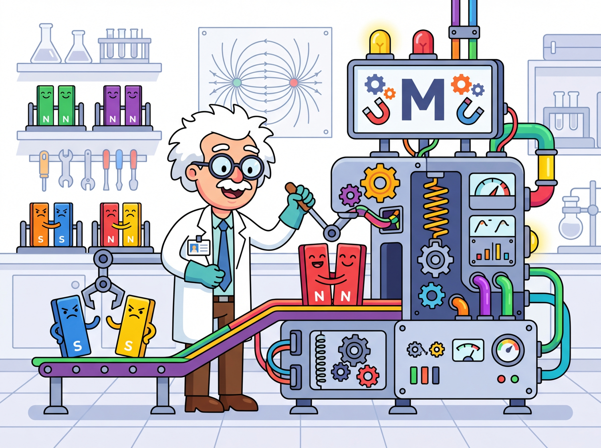

You shall know a word by the company it keeps.
Vec, Linguistically Social AI Agent
Embeddings are the bridge between human language and machine computation. Imagine searching through 10 million customer support tickets to find the one that matches a new complaint, not by keywords, but by meaning. Every semantic search system, every RAG pipeline, and every vector database depends on the quality of the embeddings that encode text as dense vectors. The choice of embedding model, its training procedure, and the similarity metric used to compare vectors together determine whether a retrieval system returns relevant results or noise. This section covers the full lifecycle of text embeddings: how they are trained, how to evaluate them, and how to adapt them to specific domains. The word embedding concepts from Section 01.2 evolved into the dense sentence representations covered here, and the embedding fine-tuning techniques from Section 14.5 show how to adapt them to your domain.
Prerequisites
This section builds on the word embedding concepts introduced in Section 01.3, where we first explored dense vector representations of words. Familiarity with the transformer encoder architecture from Section 04.1 will help you understand how modern embedding models produce contextual representations. If you plan to fine-tune embeddings for your domain, the training fundamentals covered in Section 14.1 provide essential background on loss functions and optimization.


19.1.1 From Words to Sentences: The Embedding Evolution
In Section 01.3, we explored how words can be represented as dense vectors and how similarity metrics capture semantic relationships. This section builds on that foundation by showing how modern embedding models extend those ideas from individual words to entire sentences and paragraphs, enabling the large-scale semantic search that powers RAG systems.
The journey from word-level to sentence-level embeddings represents one of the most consequential
progressions in NLP. Early approaches like Word2Vec and GloVe learned to map individual words into
dense vectors where geometric relationships encoded semantic relationships. The classic example of
king - man + woman ≈ queen demonstrated that these vector spaces captured meaningful
analogies, but word embeddings suffered from a fundamental limitation: they assigned a single vector
to each word regardless of context.
Contextual embeddings from models like Section 4.1 resolved this ambiguity by producing different representations for the same word in different contexts. However, using BERT directly for sentence similarity proved problematic. Computing the similarity between two sentences required passing both through the model simultaneously (cross-encoding), making it computationally infeasible to search across millions of documents at query time.
The original Word2Vec paper showed that king - man + woman = queen, but less publicized is that it also learned Paris - France + Italy = Rome. Somewhere in 300 dimensions, a neural network independently rediscovered geography.
The progression from word embeddings to sentence embeddings is a concrete instance of the manifold hypothesis from topology and differential geometry. This hypothesis, articulated by researchers like Yoshua Bengio, holds that high-dimensional data (such as natural language sentences) actually occupies a much lower-dimensional manifold embedded within the high-dimensional space. Sentence embeddings attempt to learn a mapping from the discrete, combinatorial space of word sequences onto a continuous manifold where geometric proximity reflects semantic similarity. The remarkable success of this approach suggests that meaning, despite its apparent complexity, has a smooth, low-dimensional structure. This connects to results in cognitive science showing that human semantic memory also exhibits a geometric organization: concepts are arranged in a "semantic space" where distances predict reaction times in priming experiments (Shepard, 1987). Both biological and artificial systems appear to converge on geometric representations of meaning.
It is tempting to say that embeddings "capture the meaning" of a sentence. More precisely, they capture distributional patterns: sentences that appear in similar contexts end up with similar vectors. Two sentences can have high cosine similarity without being semantically equivalent (for example, "the patient was treated by the doctor" and "the doctor was treated by the patient" may embed similarly despite having opposite meanings). Embeddings encode co-occurrence patterns, not logical entailment. For tasks requiring precise semantic reasoning, retrieval based on embeddings should be followed by a re-ranking or verification step (covered in Section 20.2).
The Bi-Encoder Architecture
The key innovation that made large-scale semantic search practical was the bi-encoder architecture, introduced by Sentence-BERT (SBERT) in 2019. Instead of feeding two sentences into one model jointly, the bi-encoder processes each sentence independently through the same transformer encoder, producing a fixed-size vector for each. These vectors can be precomputed and stored in an index, enabling similarity search with a simple dot product or cosine similarity operation at query time. contrasts these two architectures side by side.
Pooling Strategies
When evaluating embedding models for your use case, start with mean pooling. It is the most forgiving choice because it aggregates signal from every token position. Switch to [CLS] pooling only if you are using a model specifically trained for it (such as certain BERT variants) and have validated that it outperforms mean pooling on your data.
A transformer encoder produces one vector per input token. To obtain a single sentence-level vector, a pooling operation aggregates these token vectors. The three common strategies are:
- [CLS] token pooling: Use the output vector corresponding to the special classification token. This works well when the model has been specifically trained with a classification objective.
- Mean pooling: Average all token output vectors (excluding padding). This is the default for most modern sentence transformers and tends to produce the most robust representations, because it aggregates signal from every token position. Important information may be concentrated in different parts of the sentence, and averaging ensures none of it is lost. By contrast, the [CLS] token must compress the entire sentence into a single position during Section 6.1, which may not happen effectively without explicit training for that purpose.
- Max pooling: Take the element-wise maximum across all token vectors. This can capture salient features but is less commonly used in practice.
# Sentence embedding with mean pooling using Sentence-Transformers
from sentence_transformers import SentenceTransformer
import numpy as np
model = SentenceTransformer("sentence-transformers/all-MiniLM-L6-v2")
sentences = [
"The cat sat on the mat.",
"A feline rested on the rug.",
"Stock prices rose sharply today."
]
# Encode produces normalized vectors by default
embeddings = model.encode(sentences, normalize_embeddings=True)
print(f"Embedding shape: {embeddings.shape}")
print(f"Embedding dimension: {embeddings.shape[1]}")
# Compute pairwise cosine similarity
similarity_matrix = np.dot(embeddings, embeddings.T)
for i in range(len(sentences)):
for j in range(i + 1, len(sentences)):
print(f"Similarity('{sentences[i][:30]}...', "
f"'{sentences[j][:30]}...'): {similarity_matrix[i][j]:.4f}")19.1.2 Training Embedding Models: Contrastive Learning
Modern embedding models are trained using contrastive learning, a framework where the model learns to pull similar (positive) pairs together and push dissimilar (negative) pairs apart in the embedding space. The quality of the training data, the choice of loss function, and the strategy for selecting hard negatives together determine the final embedding quality.
Loss Functions
Multiple Negatives Ranking Loss (MNRL)
The most widely used loss function for embedding training is Multiple Negatives Ranking Loss (also called InfoNCE). Given a batch of N positive pairs (query, positive_passage), the loss treats the other N-1 passages in the batch as negatives for each query. This "in-batch negatives" approach is highly efficient because it provides N-1 negatives for free, without requiring explicit negative sampling.
# Simplified InfoNCE / Multiple Negatives Ranking Loss
import torch
import torch.nn.functional as F
def multiple_negatives_ranking_loss(query_emb, passage_emb, temperature=0.05):
"""
query_emb: (batch_size, embed_dim) - query embeddings
passage_emb: (batch_size, embed_dim) - positive passage embeddings
Each query_emb[i] pairs with passage_emb[i] (positive).
All other passages in the batch serve as negatives.
"""
# Compute similarity matrix: (batch_size, batch_size)
similarity = torch.matmul(query_emb, passage_emb.T) / temperature
# Labels: diagonal entries are the positives
labels = torch.arange(similarity.size(0), device=similarity.device)
# Cross-entropy loss treats this as N-way classification
loss = F.cross_entropy(similarity, labels)
return loss
# Example: batch of 4 query-passage pairs
batch_size, dim = 4, 384
queries = F.normalize(torch.randn(batch_size, dim), dim=-1)
passages = F.normalize(torch.randn(batch_size, dim), dim=-1)
loss = multiple_negatives_ranking_loss(queries, passages)
print(f"MNRL Loss: {loss.item():.4f}")Triplet Loss and Other Objectives
Earlier approaches used triplet loss, which operates on (anchor, positive, negative) triples and enforces a margin between the positive and negative distances. While simpler conceptually, triplet loss is less sample-efficient than MNRL because it uses only one negative per anchor. Other loss variants include cosine similarity loss for regression-style training on continuous similarity scores, and distillation losses that transfer knowledge from a cross-encoder teacher to a bi-encoder student.
Hard Negative Mining
The choice of negative examples profoundly impacts embedding quality. Random negatives are typically too easy for the model to distinguish, providing little learning signal. Hard negatives are passages that are superficially similar to the query but are not actually relevant. They force the model to learn fine-grained distinctions.
Common approaches for mining hard negatives include: (1) BM25 negatives, where you retrieve the top BM25 results that are not labeled as positive; (2) model-mined negatives, where you use a previous version of the embedding model to find near-miss passages; and (3) cross-encoder reranking, where a cross-encoder scores candidates and borderline cases become hard negatives. The most effective pipelines combine multiple strategies, starting with BM25 negatives for initial training and then mining harder negatives with the trained model for further fine-tuning rounds.
# Hard negative mining with a trained embedding model
from sentence_transformers import SentenceTransformer
import numpy as np
def mine_hard_negatives(model, queries, corpus, positives_map,
top_k=30, num_negatives=5):
"""
Mine hard negatives by finding similar but non-relevant passages.
Args:
queries: list of query strings
corpus: list of all passage strings
positives_map: dict mapping query_idx -> set of positive passage indices
top_k: number of candidates to retrieve
num_negatives: number of hard negatives per query
"""
# Encode everything
query_embs = model.encode(queries, normalize_embeddings=True)
corpus_embs = model.encode(corpus, normalize_embeddings=True)
hard_negatives = {}
for q_idx, q_emb in enumerate(query_embs):
# Compute similarities to all passages
sims = np.dot(corpus_embs, q_emb)
# Get top-k most similar passages
top_indices = np.argsort(sims)[::-1][:top_k]
# Filter out actual positives to keep only hard negatives
positive_set = positives_map.get(q_idx, set())
neg_indices = [idx for idx in top_indices if idx not in positive_set]
hard_negatives[q_idx] = neg_indices[:num_negatives]
return hard_negatives
# Example usage
model = SentenceTransformer("sentence-transformers/all-MiniLM-L6-v2")
queries = ["What causes diabetes?", "How does photosynthesis work?"]
corpus = [
"Diabetes is caused by insulin resistance or insufficient insulin production.",
"Type 2 diabetes risk factors include obesity and sedentary lifestyle.",
"Photosynthesis converts sunlight into chemical energy in plants.",
"The Calvin cycle fixes carbon dioxide into glucose molecules.",
"Machine learning models require large datasets for training.",
]
positives_map = {0: {0, 1}, 1: {2, 3}}
negatives = mine_hard_negatives(model, queries, corpus, positives_map)
print("Hard negatives for each query:")
for q_idx, neg_ids in negatives.items():
print(f" Query: '{queries[q_idx]}'")
for nid in neg_ids:
print(f" Negative: '{corpus[nid][:60]}...'")19.1.3 Modern Embedding Architectures
Matryoshka Representation Learning (MRL)
Traditional embedding models produce fixed-dimension vectors (e.g., 768 or 1536 dimensions). If you need smaller vectors for storage efficiency, you must train a separate model. Matryoshka Representation Learning (Kusupati et al., 2022) solves this by training a single model whose embeddings are useful at multiple dimensionalities. The first d dimensions of a 768-dimensional embedding form a valid d-dimensional embedding, much like nested Russian dolls.
During training, the loss function is computed at multiple truncation points (e.g., dimensions 32, 64, 128, 256, 512, 768), and the gradients from all truncation levels are summed. This forces the model to pack the most important information into the leading dimensions. Figure 19.1.5 visualizes this nested structure.
ColBERT: Late Interaction
ColBERT introduces a late interaction paradigm that sits between bi-encoders and cross-encoders. Instead of compressing each sentence into a single vector, ColBERT retains per-token embeddings for both the query and the document. At search time, it computes the maximum similarity between each query token and all document tokens (MaxSim), then sums these scores across query tokens.
This approach preserves much of the expressiveness of cross-encoders while still allowing document token embeddings to be precomputed. The tradeoff is storage: a document with 200 tokens requires storing 200 vectors instead of one. ColBERT v2 addresses this through residual compression, reducing storage by 6 to 10 times while preserving retrieval quality.
# ColBERT-style MaxSim scoring (simplified)
import torch
import torch.nn.functional as F
def colbert_score(query_tokens, doc_tokens):
"""
Compute ColBERT late-interaction score.
query_tokens: (num_query_tokens, dim) - per-token query embeddings
doc_tokens: (num_doc_tokens, dim) - per-token document embeddings
"""
# Normalize token embeddings
query_tokens = F.normalize(query_tokens, dim=-1)
doc_tokens = F.normalize(doc_tokens, dim=-1)
# Similarity matrix: (num_query_tokens, num_doc_tokens)
sim_matrix = torch.matmul(query_tokens, doc_tokens.T)
# MaxSim: for each query token, find max similarity to any doc token
max_sim_per_query_token = sim_matrix.max(dim=-1).values
# Sum across query tokens
score = max_sim_per_query_token.sum()
return score
# Example
num_q_tokens, num_d_tokens, dim = 8, 50, 128
q_embs = torch.randn(num_q_tokens, dim)
d_embs = torch.randn(num_d_tokens, dim)
score = colbert_score(q_embs, d_embs)
print(f"ColBERT score: {score.item():.4f}")19.1.4 Embedding Model Ecosystem and Selection
API Embedding Services
For teams that prefer managed solutions, several providers offer embedding APIs. OpenAI's
text-embedding-3-small and text-embedding-3-large models support
Matryoshka-style dimension reduction through a dimensions parameter. Cohere's
embed-v3 models support separate input types for queries and documents, which
can improve retrieval quality. Google's Vertex AI provides the Gecko embedding model with
built-in task-type specification.
# Using OpenAI embeddings with dimension control
from openai import OpenAI
import numpy as np
client = OpenAI()
texts = [
"Retrieval augmented generation combines search with LLMs.",
"RAG systems ground language model outputs in retrieved documents.",
"The weather forecast predicts rain tomorrow."
]
# Generate embeddings at reduced dimensionality (Matryoshka-style)
response = client.embeddings.create(
model="text-embedding-3-small",
input=texts,
dimensions=256 # Reduce from default 1536 to 256
)
embeddings = np.array([item.embedding for item in response.data])
print(f"Shape: {embeddings.shape}")
# Compute cosine similarities
norms = np.linalg.norm(embeddings, axis=1, keepdims=True)
normalized = embeddings / norms
similarity = np.dot(normalized, normalized.T)
print(f"RAG-related similarity: {similarity[0][1]:.4f}")
print(f"Unrelated similarity: {similarity[0][2]:.4f}")The MTEB Benchmark
The Massive Text Embedding Benchmark (MTEB) evaluates embedding models across multiple tasks: classification, clustering, pair classification, reranking, retrieval, semantic textual similarity (STS), and summarization. MTEB covers dozens of datasets across multiple languages, making it the standard reference for comparing embedding models.
MTEB scores are useful for narrowing your choices, but they do not guarantee performance on your specific data. Models that score highest on MTEB may underperform on domain-specific tasks (legal, medical, scientific) compared to models fine-tuned on in-domain data. Always evaluate candidate models on a representative sample of your actual queries and documents before committing to a production deployment.
| Model | Dimensions | Max Tokens | MTEB Avg | Type |
|---|---|---|---|---|
| text-embedding-3-large | 3072 (adjustable) | 8191 | 64.6 | API |
| text-embedding-3-small | 1536 (adjustable) | 8191 | 62.3 | API |
| voyage-3 | 1024 | 32000 | 67.5 | API |
| GTE-Qwen2-7B | 3584 | 32768 | 70.2 | Open-source |
| E5-Mistral-7B | 4096 | 32768 | 66.6 | Open-source |
| all-MiniLM-L6-v2 | 384 | 256 | 56.3 | Open-source |
| bge-large-en-v1.5 | 1024 | 512 | 64.2 | Open-source |
| nomic-embed-text-v1.5 | 768 (Matryoshka) | 8192 | 62.3 | Open-source |
19.1.5 Embedding Space Geometry
Similarity Metrics
The choice of similarity metric affects both retrieval quality and computational performance. The three standard metrics are:
- Cosine similarity: Measures the angle between vectors, ignoring magnitude. Ranges from -1 to 1. Most commonly used for text embeddings because it is invariant to vector length. Equivalent to dot product on L2-normalized vectors.
- Dot product (inner product): Measures both directional similarity and magnitude. Useful when vector length carries meaningful information (e.g., passage importance). Faster than cosine similarity when vectors are not pre-normalized.
- Euclidean distance (L2): Measures straight-line distance in the embedding space. Lower values indicate greater similarity. Equivalent to cosine distance for normalized vectors, but can behave differently for unnormalized vectors.
For most text embedding models, L2-normalizing your vectors before indexing simplifies everything. When vectors are unit-length, cosine similarity equals dot product, and Euclidean distance is a monotonic transformation of cosine distance. This means you can use the fastest available operation (dot product) and get equivalent results to cosine similarity. Most modern embedding models either normalize output by default or provide a parameter to enable it.
Dimensionality and the Curse of Dimensionality
In high-dimensional spaces, distances between points tend to concentrate: the difference between the nearest and farthest neighbor shrinks relative to the overall distance. This phenomenon, known as the curse of dimensionality, means that exact nearest neighbor search becomes less meaningful as dimensionality grows. In practice, this is why approximate nearest neighbor (ANN) algorithms work so well for embeddings: the approximation error introduced by ANN is often smaller than the noise inherent in high-dimensional distance computations. Figure 19.1.6 shows how semantic clustering emerges in embedding space.
19.1.6 Fine-Tuning Embeddings for Domain Specificity
General-purpose embedding models may not capture domain-specific terminology or relationships well. For example, in a legal domain, "consideration" means something entirely different from its everyday usage. Fine-tuning an embedding model on domain-specific data can substantially improve retrieval quality.
# Fine-tuning a sentence transformer on domain-specific data
from sentence_transformers import (
SentenceTransformer,
SentenceTransformerTrainer,
SentenceTransformerTrainingArguments,
losses,
)
from datasets import Dataset
# Prepare training data: (anchor, positive) pairs
# Hard negatives are automatically mined from in-batch examples
train_data = Dataset.from_dict({
"anchor": [
"What is consideration in contract law?",
"Define the doctrine of estoppel",
"What constitutes a breach of fiduciary duty?",
],
"positive": [
"Consideration is something of value exchanged between parties to a contract.",
"Estoppel prevents a party from asserting a claim inconsistent with prior conduct.",
"A fiduciary breach occurs when a fiduciary acts against the beneficiary interest.",
],
})
# Load base model
model = SentenceTransformer("sentence-transformers/all-MiniLM-L6-v2")
# Configure training
loss = losses.MultipleNegativesRankingLoss(model)
args = SentenceTransformerTrainingArguments(
output_dir="./legal-embedding-model",
num_train_epochs=3,
per_device_train_batch_size=32,
learning_rate=2e-5,
warmup_ratio=0.1,
fp16=True,
)
trainer = SentenceTransformerTrainer(
model=model,
args=args,
train_dataset=train_data,
loss=loss,
)
trainer.train()
model.save_pretrained("./legal-embedding-model")Effective embedding fine-tuning typically requires at least 1,000 to 10,000 query-passage pairs from your domain. Start with a strong general-purpose base model (such as bge-large-en-v1.5 or GTE-large) rather than training from scratch. Use a small learning rate (1e-5 to 3e-5) and monitor validation retrieval metrics (recall@10, MRR@10) to detect overfitting early. If you have limited labeled data, consider using LLM-generated synthetic queries to augment your training set.
19.1.7 Practical Considerations
Query and Document Prefixes
Many modern embedding models (E5, BGE, GTE) use instruction prefixes to distinguish
between different input types. For example, the E5 model family expects queries to be prefixed with
"query: " and documents with "passage: ". Forgetting these prefixes can
significantly degrade retrieval performance. Always check the model documentation for required
formatting conventions.
Sequence Length and Truncation
Every embedding model has a maximum sequence length, beyond which input is truncated. Older models like all-MiniLM-L6-v2 support only 256 tokens, while newer models such as nomic-embed-text-v1.5 and GTE-Qwen2 handle 8,192 or even 32,768 tokens. When your documents exceed the model's limit, you must chunk them before embedding, which is covered in detail in Section 19.4.
Batch Size and Throughput
Embedding throughput scales linearly with batch size up to the GPU memory limit. For production workloads, encode documents in large batches (256 to 1024) to maximize GPU utilization. For real-time query encoding, latency is more important than throughput, so smaller batch sizes (1 to 16) are typical. Consider using ONNX Runtime or TensorRT for optimized inference if you are serving embeddings at scale.
Show Answer
Show Answer
Show Answer
Show Answer
Show Answer
Always L2-normalize your embedding vectors before inserting them into a vector database. This converts cosine similarity to simple dot product, which is faster to compute and supported natively by all vector databases.
- Bi-encoders enable scalable search by precomputing document embeddings, reducing query-time computation to a single dot product per candidate.
- Contrastive learning with in-batch negatives (MNRL/InfoNCE) is the standard training approach, and hard negative mining is critical for pushing embedding quality beyond baseline levels.
- Matryoshka embeddings provide flexible dimensionality from a single model, enabling storage/accuracy tradeoffs without retraining.
- ColBERT's late interaction preserves per-token information for better accuracy at the cost of higher storage requirements.
- Always evaluate on your data. MTEB scores provide a starting point, but domain-specific evaluation is essential for production model selection.
- L2-normalize your embeddings to simplify metric choices and enable the fastest similarity computation (dot product).
- Fine-tuning on 1K to 10K domain pairs can dramatically improve retrieval quality for specialized applications.
Who: A senior ML engineer at a 200-person legal technology startup
Situation: The company needed to build a semantic search system over 4 million legal documents (contracts, briefs, case law) to help paralegals find relevant precedents.
Problem: General-purpose embedding models (e.g., all-MiniLM-L6-v2) scored well on MTEB benchmarks but returned poor results on domain-specific queries like "force majeure clause triggered by pandemic."
Dilemma: A larger model (e5-large-v2, 1024 dimensions) offered better retrieval quality but required 4x the storage and doubled query latency. Fine-tuning a smaller model required 5,000 labeled query/passage pairs, which would take two weeks to annotate.
Decision: The team chose to fine-tune e5-base-v2 (768 dimensions) using 3,000 pairs curated from existing attorney search logs, supplemented with 2,000 synthetic pairs generated by GPT-4.
How: They used sentence-transformers with MultipleNegativesRankingLoss, mining hard negatives from BM25 results. Training took 6 hours on a single A100 GPU.
Result: Recall@10 improved from 62% to 84% on their internal legal benchmark, while keeping latency under 50ms per query. Storage stayed manageable at 12 GB for the full index.
Lesson: Domain-specific fine-tuning on a moderate-sized model often outperforms a larger general model, especially when you can mine training data from real user interactions.
Lab: Compare Embedding Models and Build a Semantic Search Engine
Objective
Load multiple embedding models, encode a document collection, build a semantic search engine using cosine similarity, and benchmark the models against each other on retrieval quality.
What You'll Practice
- Loading and using sentence-transformers embedding models
- Computing cosine similarity between query and document embeddings
- Building a simple vector search index from scratch
- Evaluating retrieval quality with precision@k
Setup
The following cell installs the required packages and configures the environment for this lab.
pip install sentence-transformers numpy pandasSteps
Step 1: Load two embedding models
Load a small and a large embedding model to compare their behavior.
from sentence_transformers import SentenceTransformer
import numpy as np
model_small = SentenceTransformer("all-MiniLM-L6-v2") # 80MB, 384 dims
model_large = SentenceTransformer("all-mpnet-base-v2") # 420MB, 768 dims
print(f"Small: {model_small.get_sentence_embedding_dimension()} dims")
print(f"Large: {model_large.get_sentence_embedding_dimension()} dims")
# Quick test
test = "Machine learning is a subset of artificial intelligence."
print(f"Small shape: {model_small.encode(test).shape}")
print(f"Large shape: {model_large.encode(test).shape}")Hint
SentenceTransformer automatically downloads model weights on first use. If memory is limited, you can use just the small model for the lab.
Step 2: Build and encode a document collection
Create a diverse set of documents and encode them all into vectors.
documents = [
"Python is a high-level programming language known for readability.",
"Neural networks are computing systems inspired by biological brains.",
"The Great Wall of China is over 13,000 miles long.",
"Photosynthesis converts sunlight into chemical energy in plants.",
"JavaScript is the most popular language for web development.",
"Deep learning uses multiple layers of neural networks.",
"The Amazon rainforest produces 20% of the world's oxygen.",
"SQL is used for managing and querying relational databases.",
"Climate change is causing rising sea levels worldwide.",
"Transfer learning lets models trained on one task help with another.",
"The human genome contains approximately 3 billion base pairs.",
"Docker containers package applications with their dependencies.",
"Coral reefs support 25% of all marine species.",
"Gradient descent is the core optimization algorithm in deep learning.",
"The International Space Station orbits Earth every 90 minutes.",
]
# TODO: Encode all documents with both models
embeddings_small = model_small.encode(documents)
embeddings_large = model_large.encode(documents)
print(f"Small embeddings: {embeddings_small.shape}")
print(f"Large embeddings: {embeddings_large.shape}")Hint
Passing the full list to model.encode(documents) is much faster than encoding one at a time because it batches the computation.
Step 3: Implement semantic search
Build a search function using cosine similarity.
def semantic_search(query, model, doc_embeddings, documents, top_k=3):
"""Find the top-k most similar documents to the query."""
# TODO: Encode the query, compute cosine similarity, return top-k
query_emb = model.encode(query)
norms = np.linalg.norm(doc_embeddings, axis=1) * np.linalg.norm(query_emb)
scores = np.dot(doc_embeddings, query_emb) / norms
top_idx = np.argsort(scores)[::-1][:top_k]
return [(documents[i], scores[i], i) for i in top_idx]
# Test
queries = [
"How do plants make food from sunlight?",
"What programming language is best for web apps?",
"Tell me about artificial intelligence techniques",
"What are some environmental issues?",
]
for q in queries:
print(f"\nQuery: {q}")
for doc, score, _ in semantic_search(q, model_small, embeddings_small, documents):
print(f" [{score:.3f}] {doc[:70]}...")Hint
Cosine similarity: dot(a, b) / (norm(a) * norm(b)). Use np.argsort(scores)[::-1][:top_k] to get the indices of the highest-scoring documents.
Step 4: Benchmark the two models
Compare retrieval quality using queries with known relevant documents.
import pandas as pd
ground_truth = {
"How do plants make food from sunlight?": [3],
"What programming language is best for web apps?": [4],
"Tell me about AI techniques": [1, 5, 9, 13],
"What are environmental issues?": [8, 6, 12],
}
def precision_at_k(retrieved_idx, relevant_idx, k=3):
return len(set(retrieved_idx[:k]) & set(relevant_idx)) / k
results = []
for query, relevant in ground_truth.items():
for name, mdl, embs in [("MiniLM", model_small, embeddings_small),
("MPNet", model_large, embeddings_large)]:
hits = semantic_search(query, mdl, embs, documents, top_k=3)
retrieved = [idx for _, _, idx in hits]
p3 = precision_at_k(retrieved, relevant, k=3)
results.append({"query": query[:40], "model": name, "P@3": p3})
df = pd.DataFrame(results)
print(df.to_string(index=False))
print(f"\nAvg P@3 MiniLM: {df[df['model']=='MiniLM']['P@3'].mean():.3f}")
print(f"Avg P@3 MPNet: {df[df['model']=='MPNet']['P@3'].mean():.3f}")Hint
Precision@3 measures the fraction of top-3 results that are relevant. The larger model typically achieves equal or slightly better precision due to its richer representations.
Expected Output
- Semantic search returning sensible results (photosynthesis for plant queries, JavaScript for web dev)
- A comparison table showing P@3 scores for both models across all queries
- The larger model (MPNet) typically scoring the same or slightly better than MiniLM
Stretch Goals
- Add a third model (e.g., "BAAI/bge-small-en-v1.5") and extend the benchmark
- Measure encoding speed (documents per second) for each model and plot quality vs. speed
- Try Matryoshka truncation: use only the first 128 dimensions and re-run the benchmark
Complete Solution
from sentence_transformers import SentenceTransformer
import numpy as np, pandas as pd
model_small = SentenceTransformer("all-MiniLM-L6-v2")
model_large = SentenceTransformer("all-mpnet-base-v2")
documents = [
"Python is a high-level programming language known for readability.",
"Neural networks are computing systems inspired by biological brains.",
"The Great Wall of China is over 13,000 miles long.",
"Photosynthesis converts sunlight into chemical energy in plants.",
"JavaScript is the most popular language for web development.",
"Deep learning uses multiple layers of neural networks.",
"The Amazon rainforest produces 20% of the world's oxygen.",
"SQL is used for managing and querying relational databases.",
"Climate change is causing rising sea levels worldwide.",
"Transfer learning lets models trained on one task help with another.",
"The human genome contains approximately 3 billion base pairs.",
"Docker containers package applications with their dependencies.",
"Coral reefs support 25% of all marine species.",
"Gradient descent is the core optimization algorithm in deep learning.",
"The International Space Station orbits Earth every 90 minutes.",
]
embs_s = model_small.encode(documents)
embs_l = model_large.encode(documents)
def search(query, model, embs, docs, k=3):
qe = model.encode(query)
scores = np.dot(embs, qe) / (np.linalg.norm(embs, axis=1) * np.linalg.norm(qe))
idx = np.argsort(scores)[::-1][:k]
return [(docs[i], scores[i], i) for i in idx]
for q in ["How do plants make food?", "Best language for web apps?",
"AI techniques", "Environmental issues?"]:
print(f"\n{q}")
for d, s, _ in search(q, model_small, embs_s, documents):
print(f" [{s:.3f}] {d[:70]}")
gt = {"How do plants make food?": [3], "Best language for web apps?": [4],
"AI techniques": [1,5,9,13], "Environmental issues?": [8,6,12]}
def p_at_k(ret, rel, k=3):
return len(set(ret[:k]) & set(rel)) / k
rows = []
for q, rel in gt.items():
for nm, m, e in [("MiniLM",model_small,embs_s),("MPNet",model_large,embs_l)]:
ri = [i for _,_,i in search(q, m, e, documents)]
rows.append({"query":q[:35],"model":nm,"P@3":p_at_k(ri, rel)})
df = pd.DataFrame(rows)
print("\n" + df.to_string(index=False))
for m in ["MiniLM","MPNet"]:
print(f"Avg {m}: {df[df['model']==m]['P@3'].mean():.3f}")Matryoshka and adaptive-dimension embeddings (Kusupati et al., 2024) allow a single model to produce embeddings at multiple dimensionalities, letting practitioners trade off between quality and storage/speed without retraining. Instruction-tuned embeddings (e.g., E5-Mistral, GritLM) embed the task description into the query, producing embeddings that are optimized for the specific retrieval, classification, or clustering task at hand.
Meanwhile, multilingual embedding models are closing the gap between English and low-resource languages through contrastive pre-training on parallel corpora. Research into embedding model distillation is producing smaller models (under 100M parameters) that match the quality of billion-parameter encoders on domain-specific benchmarks, a critical development for edge deployment.
Exercises
Conceptual questions test your understanding of embedding models and training. Coding exercises should be run in a Jupyter notebook with sentence-transformers installed.
Explain why a bi-encoder is preferred over a cross-encoder for large-scale retrieval, even though cross-encoders are more accurate. Under what conditions would you use a cross-encoder instead?
Show Answer
Bi-encoders encode query and documents independently, allowing precomputation. Cross-encoders require joint encoding of every query-document pair, which is $O(N)$ per query. Use cross-encoders for reranking a small candidate set (top 20 to 50) after bi-encoder retrieval.
In contrastive learning, what happens if all the negative samples in a batch are too easy (very different from the anchor)? How does hard negative mining address this?
Show Answer
Easy negatives provide almost no gradient signal because the model already distinguishes them. Hard negative mining selects negatives that are close to the anchor in embedding space, forcing the model to learn finer distinctions. Without it, the model plateaus quickly.
Explain how Matryoshka Representation Learning allows a single model to produce useful embeddings at multiple dimensionalities. Why is it better than simply training separate models at each dimension?
Show Answer
MRL trains the model so that truncating the embedding vector to any prefix still produces a useful representation. The information is hierarchically packed: the most important dimensions come first. Training separate models at each dimension would require N models and N times the compute.
A colleague stores embeddings in a vector database using dot product similarity but uses a model trained with cosine similarity loss. What problems might arise, and how would you fix them?
Show Answer
Dot product is not normalized, so vectors with larger magnitudes will dominate results regardless of semantic similarity. Either normalize embeddings before storing (making dot product equivalent to cosine), or switch the database to cosine similarity metric.
You have an embedding model trained on general web text, but your application involves legal contracts. Describe two strategies for adapting the model to the legal domain, and explain the tradeoffs between them.
Show Answer
(a) Contrastive fine-tuning on legal sentence pairs (higher quality, requires labeled pairs). (b) Continued pretraining on legal text with a masked language modeling objective (no labels needed, but less targeted). Fine-tuning is more effective when you have at least a few hundred labeled pairs.
Use sentence-transformers to embed 10 sentences from two distinct topics (e.g., cooking and programming). Compute pairwise cosine similarities and visualize the similarity matrix as a heatmap. Do within-topic similarities consistently exceed cross-topic similarities?
Take a model that supports Matryoshka embeddings (e.g., nomic-embed-text-v1.5). Embed 100 sentence pairs and measure retrieval accuracy (Recall@5) at dimensions 768, 384, 128, and 64. At what dimension does quality degrade noticeably?
Using an instruction-tuned model like E5, embed the same text with and without the query/passage prefix. Compare the resulting vectors using cosine similarity. How much does the prefix change the embedding?
Using the sentence-transformers training API, fine-tune a small embedding model on a domain-specific dataset (e.g., StackOverflow question pairs). Compare retrieval performance before and after fine-tuning on a held-out test set.
What Comes Next
In the next section, Section 19.2: Vector Index Data Structures & Algorithms, we explore vector index data structures and algorithms (HNSW, IVF, PQ) that enable fast similarity search at scale.
References & Further Reading
Introduced the Siamese/triplet network approach to generating sentence embeddings from BERT, making semantic similarity search practical. The foundation for the entire sentence-transformers ecosystem.
Describes the E5 embedding model family trained with contrastive learning on weakly supervised data. Demonstrates how large-scale noisy training pairs can produce state-of-the-art embeddings without manual annotation.
Introduces the late-interaction paradigm for retrieval, where query and document tokens interact through lightweight MaxSim operations. Achieves near cross-encoder quality with bi-encoder speed.
Muennighoff, N. et al. (2023). "MTEB: Massive Text Embedding Benchmark." EACL 2023.
The standard benchmark for evaluating text embedding models across 8 tasks and 58 datasets. Essential for comparing models before selecting one for production use.
Pioneered in-batch negatives for contrastive training at scale, a technique now used by nearly every modern embedding model. Practical reading for anyone implementing custom training loops.
Sentence-Transformers Documentation
The go-to Python library for computing sentence and text embeddings. Covers model selection, fine-tuning, and integration with vector stores. Start here for hands-on implementation.